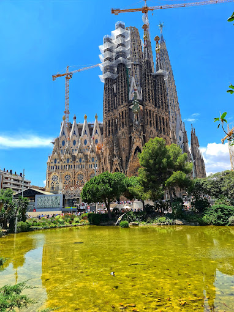

Basílica de la Sagrada Familia
The Basílica i Temple Expiatori de la Sagrada Família, otherwise known as Sagrada Família, is a church under construction in the Eixample district of Barcelona, Catalonia, Spain. It is the largest unfinished Catholic church in the world.
